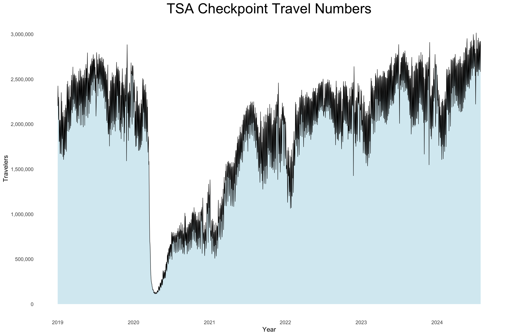

Sometimes I will see a news article like this: Record 3 million passengers passed through TSA checkpoints Sunday after July 4th. I was curious about TSA checkpoint data looked like, especially during the COVID-19 pandemic. I found the TSA Checkpoint Travel Numbers here: https://www.tsa.gov/travel/passenger-volumes.
I used R to scrape the tables from the TSA website and plot
visualizations. This project especially helped me practice web scraping
and basic Shiny tools.
I started by plotting a static graph of the travelers going
through TSA checkpoints from January 1, 2019 to the present day (July
21, 2024).

Then I put together a Shiny app that allows users to:Select a year to see a visualization of travelers in the selected year. I set 2020 as the default plot to be shown because of the plummet of travelers around the start of the COVID-19 pandemic.
Select a day (e.g. April 15 would be 04-15) to see a table for
travel counts for that day across each year from 2019-2024.
View the Shiny App on my shinyapps.io page here: https://axelkent.shinyapps.io/tsa-shiny/
TSA (2024). TSA Passenger Volumes, 2019-2024, https://www.tsa.gov/travel/passenger-volumes
library(rvest)
library(ggplot2)
library(dplyr)
library(stringr)
library(lubridate)
library(scales)
library(shiny)
library(DT)
# Specify the URL
url <- "https://www.tsa.gov/travel/passenger-volumes"
# Read the HTML content from the webpage
webpage <- read_html(url)
# Extract the first table (or specify the exact table if there are multiple)
table2024 <- webpage |>
html_node("table") |>
html_table(fill = TRUE) |>
select(Date, `2024`) |>
rename("Numbers" = `2024`)
#Retrieved archived annual tables
for (year in 2019:2023) {
url <- paste0("https://www.tsa.gov/travel/passenger-volumes/", year)
webpage <- read_html(url)
df <- webpage |>
html_node("table") |>
html_table(fill = TRUE)
assign(paste0("table", year), df)
}
FullTable <- rbind(table2024,table2023,table2022,table2021,table2020,table2019) |>
mutate(Date = mdy(Date)) |>
mutate(Numbers = str_replace_all(Numbers, ",", "")) |>
mutate(Numbers = as.numeric(Numbers))
ggplot(FullTable, aes(x = Date, y = Numbers)) +
geom_area(fill = "lightblue", alpha = 0.5) +
geom_line(linewidth = 0.3)+
labs(title = "TSA Checkpoint Travel Numbers",
x = "Year",
y = "Travelers") +
scale_y_continuous(labels = comma, breaks = seq(0, 3000000, by = 500000)) +
scale_x_date(date_breaks = "1 year", date_labels = "%Y") +
theme_minimal() +
theme(panel.grid.major = element_blank(),
panel.grid.minor = element_blank(),
plot.title = element_text(hjust = 0.5, size = 24))
FullTable <- rbind(table2024,table2023,table2022,table2021,table2020,table2019) |>
mutate(Date = mdy(Date)) |>
mutate(Numbers = str_replace_all(Numbers, ",", "")) |>
mutate(Numbers = as.numeric(Numbers))
# Define UI
ui <- fluidPage(
titlePanel("TSA Checkpoint Travel Numbers"),
fluidRow(
column(12,
sidebarPanel(
selectInput("selected_year", "Select Year", choices = 2019:2024),
selectInput("selected_day", "Select Day", choices = NULL) # Options will be updated dynamically
),
mainPanel(
plotOutput("travel_plot"),
DTOutput("travel_table")
)
)
)
)
# Define server logic
server <- function(input, output, session) {
# Update the day selection input based on the selected year
observe({
selected_year <- input$selected_year
days_in_year <- FullTable %>%
filter(format(Date, "%Y") == selected_year) %>%
mutate(day = format(Date, "%m-%d")) %>%
pull(day) %>%
unique() %>%
sort()
updateSelectInput(session, "selected_day", choices = days_in_year)
})
# Render the plot
output$travel_plot <- renderPlot({
filtered_data <- FullTable %>%
filter(format(Date, "%Y") == input$selected_year)
ggplot(filtered_data, aes(x = Date, y = Numbers)) +
geom_area(fill = "lightblue", alpha = 0.5) +
geom_line(linewidth = 0.3) +
labs(title = "TSA Checkpoint Travel Numbers",
x = "Date",
y = "Travelers") +
scale_y_continuous(labels = comma, breaks = seq(0, 3000000, by = 500000), limits = c(0, 3000000)) +
scale_x_date(date_breaks = "1 month", date_labels = "%b") +
theme_minimal() +
theme(panel.grid.major = element_blank(),
panel.grid.minor = element_blank(),
plot.title = element_text(hjust = 0.5))
})
# make table based on a day (month-day)
output$travel_table <- renderDT({
selected_day <- input$selected_day
data_table <- FullTable %>%
filter(format(Date, "%m-%d") == selected_day) %>%
group_by(Year = format(Date, "%Y")) %>%
summarise(Travelers = sum(Numbers)) %>%
arrange(Year) |>
mutate(Travelers = format(Travelers, big.mark = ",", scientific = FALSE))
datatable(data_table, options = list(dom = 't'), rownames = FALSE)
})
}
# Run the application
shinyApp(ui = ui, server = server)